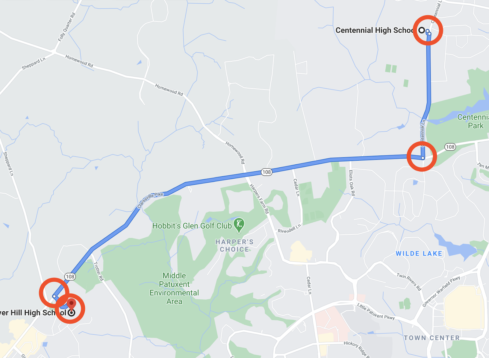

Sponsored by Vanguard Orthodontics
Google Maps
Explaining how Google Maps works using graphs and pathfinding algorithms
Warning: Please read the “Graphs” article for background knowledge on this article.
“How do I get from point A to point B?” is a simple question that we ask almost every single day of our lives. There are places we need to be, and “how do we get there” and “how do we get there fast” are essential concerns.
Luckily for us, in this day and age we don’t need to think about those things anymore. We can just open up Google Maps, type in our destination, and instantly get the fastest possible route to walk, drive, or bike there.
If you’ve read previous articles, you may have an idea as to how the underlying logic and computation behind the routing technology works, and you’re probably right (mostly). Google Maps initially stores its data as a
weighted directed graph. This graph has a couple of features:
- Nodes represent individual locations (schools, restaurants, neighborhoods, intersections, etc.)
- Directed edges represent roads (two separate directed edges represent two-way streets)
- Each edge is weighted by the time it takes to travel all the road between the two locations it connects
For example, to drive from Centennial High School (one node) to River Hill High School (another node), you would travel along Centennial Lane (a directed edge) until you reach the intersection (a node) with Route 108 (another directed edge), which you would then follow to the West until you reach River Hill.

Google Maps uses a pathfinding algorithm to calculate the fastest possible route between two given nodes in a graph. In previous articles, we’ve mentioned shortest-path algorithms, which solve a very similar problem and work under the same underlying logic.
Recall that with standard shortest-path algorithms, we use a breadth-first search to explore the closest nodes first and move outwards from there. Pathfinding algorithms add an optimization over standard shortest-path algorithms that make them more practical for everyday use. In particular, pathfinding algorithms work by leveraging some initial estimate (called a heuristic) to guess a general direction of where the path to the end goal is located. For example, a pathfinding algorithm might consider: my destination is 20 miles south of my current location, so we can search a little north in case there is a highway going straight to where I want to be. However, it would not make a lot of sense for me to go too far north. Therefore, the pathfinding algorithm would spend most of its time exploring paths going south, whereas a typical shortest-path algorithm would explore in all directions.
Note: Pathfinding algorithms are not more computationally efficient than standard shortest-path algorithms, and in the worst-case scenario, they have the same, if not worse, performance compared to a typical shortest-path algorithm. However, in most real-life situations, pathfinding algorithms will be faster than a regular shortest-path algorithm.